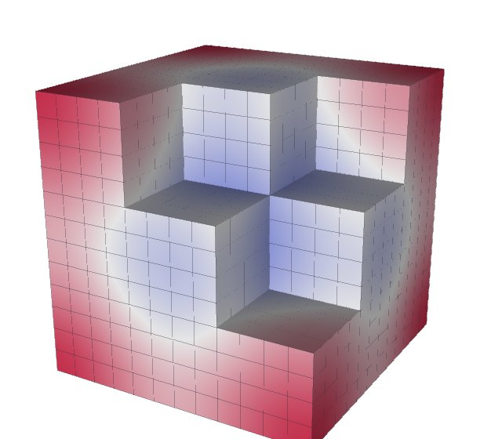
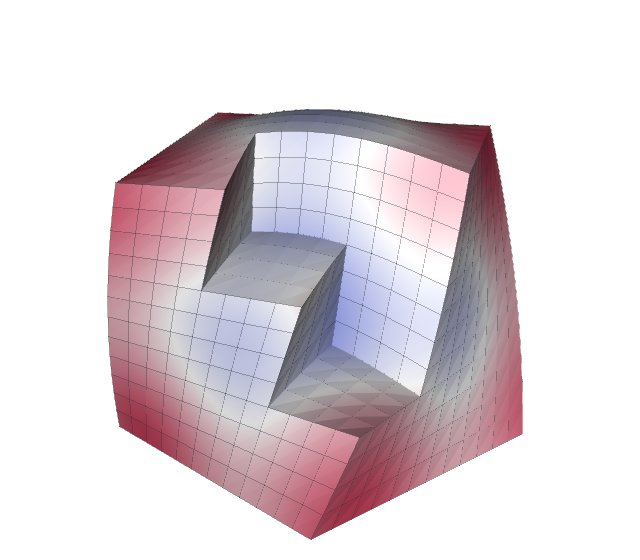

VTK¶
Tack does not read most file formats, and it does not render. VTK does both, so most workflows read with VTK, compute with Tack and draw or write with VTK. Moving a dataset between the two takes one call each way. The two can share memory instead of copying it, and Tack's filters can sit in a VTK pipeline beside VTK's own. VTK's higher-order cells and cell grids convert too. Tack's terms are in the glossary.
Install VTK with Tack's interop extra (uv sync --extra interop). Tack needs
VTK 9.7.1 or later and uses VTK's pythonic API throughout.
Convert a dataset both ways¶
import pathlib
import tempfile
import numpy as np
import vtkmodules.vtkCommonDataModel # registers VTK's pythonic constructors
from vtkmodules.vtkImagingCore import vtkRTAnalyticSource
from vtkmodules.vtkIOXML import vtkXMLUnstructuredGridReader, vtkXMLUnstructuredGridWriter
import tack
import tack.dataset as td
from tack.interop.vtk import dataset_to_vtk, vtk_to_dataset
tack.set_default_device("cpu")
image = vtkRTAnalyticSource(whole_extent=(-10, 10, -10, 10, -10, 10))()
data = vtk_to_dataset(image) # an image in Tack too
assert isinstance(data.geometry.values, tack.arrays.UniformCoordinates)
surface = td.contour(data, "RTData", 160.0)
grid = dataset_to_vtk(surface) # a vtkUnstructuredGrid of triangles
path = pathlib.Path(tempfile.mkdtemp()) / "surface.vtu"
vtkXMLUnstructuredGridWriter(file_name=str(path))(grid)
again = vtk_to_dataset(vtkXMLUnstructuredGridReader(file_name=str(path))())
assert again.num_cells == surface.num_cells == grid.number_of_cells
assert np.allclose(again.fields["RTData"].values.numpy(), 160.0, atol=1e-3)
vtk_to_dataset makes a Tack DataSet from a VTK dataset, and
dataset_to_vtk makes a VTK dataset from a Tack one. Both copy by default.
Point data becomes H1 fields of order 1, and cell data becomes Constant
fields; both are fields of the Data layer. An image stays
an image: its positions are computed from its origin and spacing, never stored.
What converts to what¶
| VTK | Tack |
|---|---|
vtkImageData |
StructuredTopology over UniformCoordinates (its direction matrix kept) |
vtkRectilinearGrid |
StructuredTopology over a CartesianProduct of its axes |
vtkStructuredGrid |
StructuredTopology with explicit positions |
vtkUnstructuredGrid of shaped cells |
UnstructuredTopology |
vtkUnstructuredGrid with polyhedra |
PolyhedralTopology, every cell a polyhedron of its faces |
| polygons, polylines | PolygonalTopology, PolylineTopology |
vtkPolyData |
the unstructured grid of its cells; triangle strips as their triangles |
| point data, cell data | H1 fields, Constant fields; a point and a cell array of one name are two fields |
vtkGhostType |
the ghost marks, data.ghosts |
GlobalIds attributes |
the global ids, data.global_ids |
an array's UNITS_LABEL |
the field's unit |
DATA_TIME_STEP |
data.time (its unit unknown) |
vtkConstantArray, vtkAffineArray |
ConstantArray, CountingArray, still implicit |
vtkPartitionedDataSet |
PartitionedDataSet, piece by piece |
vtkPartitionedDataSetCollection |
a dict of PartitionedDataSets, by block name |
vtkOverlappingAMR |
AMRDataSet (AMR and octrees) |
vtkHyperTreeGrid |
OctreeDataSet |
vtkCellGrid |
DataSet with H1, L2 and Constant fields (below) |
Going back, dataset_to_vtk makes the matching VTK type. Fields VTK keeps
nowhere are left out: L2 fields, which would need duplicated points, and
values on faces or edges. A 3-vector point field named normals or Normals
becomes VTK's active normals.
Positions are kept relative to an origin
in Tack. vtk_to_dataset(grid, origin=...) takes one. Without it, a grid
converted to single precision whose points are far from zero for their size
gets an origin chosen for it, so its coordinates keep their precision.
dataset_to_vtk writes world positions.
Share memory instead of copying¶
copy=False shares arrays where both sides store them alike:
import numpy as np
import vtkmodules.vtkCommonDataModel # registers VTK's pythonic constructors
from vtkmodules.vtkImagingCore import vtkRTAnalyticSource
import tack
import tack.dataset as td
from tack.interop.vtk import dataset_to_vtk, vtk_to_dataset
tack.set_default_device("cpu")
image = vtkRTAnalyticSource(whole_extent=(-10, 10, -10, 10, -10, 10))()
data = vtk_to_dataset(image, dtype=None, copy=False) # VTK's own arrays
rt = data.fields["RTData"].values
np.asarray(image.point_data["RTData"])[0] = -1.0 # VTK writes ...
assert float(rt[0]) == -1.0 # ... and Tack sees it
@tack.kernel
def double(v):
for i in range(v.shape[0]):
v[i] = 2.0 * v[i]
surface = td.contour(data, "RTData", 160.0)
grid = dataset_to_vtk(surface, copy=False) # Tack's arrays, in VTK
double(surface.fields["RTData"].values) # Tack writes ...
assert np.allclose(np.asarray(grid.point_data["RTData"]), 320.0, atol=1e-3) # ... VTK sees it
From VTK, copy=False shares points, data arrays, cell types, offsets,
connectivity, ghost marks and global ids, wherever an array is one contiguous
block of the type Tack keeps it in. dtype=None keeps each floating-point
array at its own precision, so an f64 array is shared rather than converted
to f32. The shared arrays are read-only to Tack: a kernel that would write one
is refused. They keep VTK's arrays alive. What cannot be shared is copied:
positions with an origin to subtract, a type to convert, triangle strips,
polyhedra.
To VTK, copy=False shares the CPU arrays: points (when there is no origin),
field values, cell arrays, ghost marks and global ids. Writes on either side
reach the other. Arrays on a GPU are copied. On Apple silicon, Metal arrays are
shared too, since their memory is the host's: launches that use a shared
buffer finish before returning, so VTK reads what Tack wrote.
Sharing a single array, rather than a dataset, goes through
tack.interop.vtk.vtk_to_array and array_to_vtk. They need a VTK built with
vtkmodules.util.dlpack_support, which the PyPI wheel lacks; see
Share arrays.
Put Tack's filters in a VTK pipeline¶
tack.interop.vtk.algorithms wraps Tack's filters as VTK algorithms. They
connect with >> like any VTK algorithm:
import vtkmodules.vtkCommonDataModel # registers VTK's pythonic constructors
from vtkmodules.vtkFiltersCore import vtkContourFilter
from vtkmodules.vtkImagingCore import vtkRTAnalyticSource
import tack
from tack.interop.vtk.algorithms import Contour, Gradients, Tetrahedralize
tack.set_default_device("cpu")
source = vtkRTAnalyticSource(whole_extent=(-10, 10, -10, 10, -10, 10))
gradients = Gradients(field="RTData", at="points", name="gradient")
contour = Contour(field="RTData", value=160.0)
surface = (source >> Tetrahedralize() >> gradients >> contour)()
assert contour.error is None
assert sorted(surface.point_data.keys()) == ["RTData", "gradient"]
# The same isosurface by VTK.
theirs = vtkContourFilter(compute_scalars=False)
theirs.SetValue(0, 160.0)
theirs.SetInputArrayToProcess(0, 0, 0, 0, "RTData")
reference = (source >> Tetrahedralize() >> theirs)()
assert surface.number_of_cells == reference.number_of_cells
Each algorithm converts its input with copy=False, runs the Tack filter on
the CPU and hands its result back to VTK with copy=False, so no array is
copied where both sides store it alike. Parameters are properties, given to
the constructor or set later; setting one marks the algorithm modified, so
the pipeline runs again.
| Algorithm | Tack filter | Output |
|---|---|---|
Contour, SlicePlane, Clip, Threshold |
contour, slice_plane, clip, threshold |
vtkUnstructuredGrid |
ExtractSurface, Tetrahedralize, SurfaceNormals, Streamlines |
extract_surface, tetrahedralize, surface_normals, streamlines |
vtkUnstructuredGrid |
ConnectedComponents |
connected_components |
the input's type, with region arrays |
Gradients, Elevation, CellQuality |
gradients, point_elevation, cell_quality |
the input's type, with the new arrays added |
GhostCells, GenerateGlobalIds, MergePieces |
ghost_cells, generate_global_ids, merge_pieces |
over every piece of a vtkPartitionedDataSet |
A vtkPartitionedDataSet input runs the filter on each piece and gives a
vtkPartitionedDataSet. The last row's algorithms need every piece at once,
so they take the pieces together; see Filters over pieces.
An exception in a filter is VTK's error. It is printed, the output is left
empty, and the algorithm's error attribute keeps the exception for Python
callers. error is None after a run that succeeded, so a script checks it
after Update() or a pipeline call.
Write your own VTK algorithm¶
Subclass TackAlgorithm and give it compute(data), a Tack dataset from a
Tack dataset. One algorithm can run several Tack filters, with no conversion
between them:
import vtkmodules.vtkCommonDataModel # registers VTK's pythonic constructors
from vtkmodules.vtkImagingCore import vtkRTAnalyticSource
import tack
import tack.dataset as td
from tack.interop.vtk.algorithms import Parameter, TackAlgorithm
tack.set_default_device("cpu")
class Skin(TackAlgorithm):
"""The boundary of the cells whose field lies in a range."""
field = Parameter(None, "the point field's name")
lower = Parameter(float("-inf"), "the lowest value kept")
upper = Parameter(float("inf"), "the highest value kept")
def compute(self, data):
inside = td.threshold(data, self.field, self.lower, self.upper)
return td.extract_surface(inside)
source = vtkRTAnalyticSource(whole_extent=(-10, 10, -10, 10, -10, 10))
skin = Skin(field="RTData", lower=200.0)
boundary = (source >> skin)()
assert skin.error is None and boundary.number_of_cells > 0
skin.upper = 250.0 # marks the algorithm modified
assert (source >> skin)().number_of_cells != boundary.number_of_cells
compute runs once per piece of a partitioned input. An algorithm whose
answer needs every piece overrides execute(data) instead. OUTPUT names
the output's VTK type for a dataset input: "vtkUnstructuredGrid" by
default, or None for the input's own type. A filter of your own
(Write a filter) goes into compute the same way.
Read meshes with polyhedra, repeated points or inside-out cells¶
vtk_to_dataset takes options for meshes as simulation codes write them:
| Option | Does | Use it for |
|---|---|---|
polyhedral=True |
reads every cell as a polyhedron of its faces | a mesh to treat as polyhedra throughout |
polyhedral="split" |
gives a PartitionedDataSet of two pieces over the same points: the shaped cells, and the polyhedra |
a large mesh with a few polyhedra, so the shaped cells stay shaped |
merge_points=True (or a tolerance) |
merges coincident points before anything else is read | a mesh written per processor and put together without merging, such as OpenFOAM's foamToVTK of a decomposed case |
orient=True |
turns inside-out cells outward, and repairs inconsistently wound polyhedra | meshes from converters that write cells in the reverse of VTK's order |
id_dtype |
the topology's id type; by default i32, unless the grid is too large for it |
choosing the id width yourself |
A topology holds either shaped cells or polyhedra for now, which is why a grid
that has any polyhedra reads as polyhedra. With polyhedral="split", each
point is owned by one of the two pieces, so reductions count it once; see
Pieces.
Inside-out cells are found on every read and named in a warning. Wedges are
the usual case: VTK's documentation long described the wedge's corner order
the reverse of how its code uses it, and writers that followed the
documentation wrote every wedge inside out. Read as polyhedra, such cells make
the faces they share refused, so a mesh with them needs orient=True there.
CGNS polyhedra from VTK's reader can be inconsistently wound too.
Merge points while reading, not after a split read. merge_points=True decides
each piece's points on the merged mesh, so every point is owned once. Merging
the pieces afterwards would decide ownership on the copies.
Read and write higher-order cells¶
VTK's Lagrange and Bezier cells read as H1 fields of the grid's largest
order, in any mix of shapes and orders (Higher order).
dataset_to_vtk(data, higher_order=True) writes them:
import numpy as np
import vtkmodules.vtkCommonDataModel # registers VTK's pythonic constructors
import tack
import tack.dataset as td
from tack.interop.vtk import dataset_to_vtk, vtk_to_dataset
tack.set_default_device("cpu")
@tack.func
def x_times_y(x):
return x[0] * x[1]
grid = td.uniform_grid((3, 3, 3))
grid.fields["f"] = td.interpolate(grid, x_times_y, td.H1(grid, order=2))
lagrange = dataset_to_vtk(grid, higher_order=True)
assert set(np.asarray(lagrange.cell_types)) == {72} # VTK_LAGRANGE_HEXAHEDRON
assert lagrange.number_of_points == 5 ** 3 # every order-2 node, once
again = vtk_to_dataset(lagrange)
assert again.fields["f"].space.order == 2
| VTK cells | Read as |
|---|---|
| Lagrange (68-73: curve, triangle, quadrilateral, tetrahedron, hexahedron, wedge) | equispaced H1 of their order |
| Bezier (75-80) | H1(basis="bernstein") |
| quadratic edge, triangle, tetrahedron (21, 22, 24) | H1 of order 2 |
| quadratic quad, hexahedron, wedge (23, 25, 26) | serendipity H1 of order 2, or the full order-2 space beside other cells |
| biquadratic quad, triquadratic hexahedron, biquadratic-quadratic wedge (28, 29, 32) | H1 of order 2 |
| quadratic-linear quad and wedge, biquadratic-quadratic hexahedron (30, 31, 33) | H1 of order 2, exactly |
| biquadratic triangle (34), cubic line (35) | H1 of order 3, exactly |
| quadratic, triquadratic, Lagrange and Bezier pyramids (27, 37, 74, 81), quadratic polygons (36) | refused |
higher_order chooses what to write. True writes Lagrange cells, Bezier
cells for a Bernstein field, and VTK's classic quadratic cells for a
serendipity field. "lagrange", "bezier" and "quadratic" choose one.
Without higher_order, a higher-order field goes to VTK as its values at the
points, on linear cells.
To draw a higher-order dataset with VTK's linear cells and keep its shape,
subdivide it first. td.subdivide(data, n) cuts each cell into n linear
sub-cells along each axis and evaluates the fields at the new points, as
VTK's vtkCellGridToUnstructuredGrid does. A point that cells share is
computed once.
-

Order 4 on straight hexahedra
-

Order 3 on curved hexahedra, the sub-cells following the curves
Each picture is td.subdivide(data, 4) of a unit cube's 27 hexahedra, with
the cells about one corner left out so the inside shows. The sub-cells'
edges are drawn, and the color is the field. The
gallery shows curved tetrahedra and
wedges too.
Read and write cell grids¶
A vtkCellGrid holds VTK's discontinuous-Galerkin cells, read from .dg files
by vtkCellGridReader. vtk_to_dataset takes one, and
dataset_to_vtk(data, cell_grid=True) makes one. Both need a VTK newer than
9.7.1.
| Cell grid basis | Read as |
|---|---|
HGRAD C1, shared |
H1 of order 1, copied |
HGRAD C1, per cell |
L2 of order 1, copied |
constant |
Constant |
HGRAD C2, I2, A (any order), G, Bezier |
resampled by VTK onto Tack's equispaced space of that order, exactly: H1 if shared, L2 per cell |
HCURL, HDIV, and pyramids' bases other than C1 |
left out, with a warning |
Writing uses C1 at order 1 and VTK's arbitrary-order A basis above it,
whose nodes are Tack's equispaced nodes in Tack's order.
Details¶
L2geometry. A dataset whose geometry is anL2field, with positions per cell corner, has no VTK form.td.shrinkmakes one, and so does a periodic MFEM mesh.td.subdivide(data, 1)gives each cell its own points first.- VTK's implicit arrays go across as implicit arrays both ways. A
contour's cell types come out as a
vtkConstantArrayand its offsets as avtkAffineArray. - Level Zero. A Level Zero pointer means something only in the context
that allocated it. To share device arrays with a VTK built with Viskores on
Kokkos' SYCL backend, start Tack with
tack.interop.vtk.init_level_zero()instead oftack.set_default_device("level_zero"). - The full signatures are in the Data Model reference.
Where to go next¶
- MFEM, Warp and others: finite-element data from MFEM, and datasets shared with NVIDIA Warp.
- Write a filter: a filter of your own, to wrap as a VTK algorithm.